3. Stylized drawing: lines, contours, depth
Chapters 1–2 gave tone. Here: the trait. Where do the lines go, how heavy, how shaky, and how does a line drawing say « far ». Two input families: a 2D image, or a 3D scene with a depth buffer.
Demo scene below (sphere, torus, ground, fog) rendered in numpy. Same scene reused everywhere.

A. Lines from an image
Sobel: gradient magnitude with two 3×3 kernels. Fast, dumb. Catches everything that changes: contours, but also shading and cast shadows. Thick, blurry, no notion of « object ». Wikipedia.
Canny (1986): smooth, gradient, non-maximum suppression (1 px thin), hysteresis threshold (keep weak edges only if linked to strong ones). Still the default in OpenCV. doi, wiki.
DoG: blur at two scales, subtract. Band-pass, approximates the Laplacian of Gaussian (and retinal center-surround cells). XDoG (Winnemöller 2011/2012) adds a sharpening factor, a threshold ε and a soft tanh ramp: the same formula gives ink lines, pencil, or comic-like blacks depending on parameters. Best quick « drawn » look from a photo. Paper (C&G 2012), wiki.
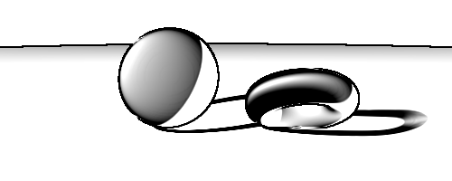
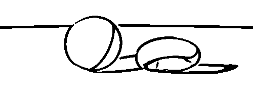
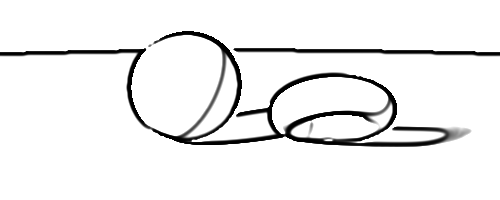
Coherent Line Drawing (Kang, Lee, Chui 2007): build an edge tangent field (smooth, direction-preserving), then run the DoG along the gradient and integrate along the flow. Lines come out continuous and clean instead of speckled. doi.
Neural. Informative Drawings (Chan, Durand, Isola 2022): learn photo → line drawing, with geometry and CLIP-based losses instead of paired data. code. CLIPasso (Vinker et al. 2022): optimise a handful of Bézier strokes so that CLIP sees the same thing as in the photo; fewer strokes = more abstract. project. Nice results, no control over the line character.
B. Lines from 3D
With a 3D model we know what a line should be:
- silhouette / occluding contour: surface normal ⊥ view ray, N·V = 0;
- boundary: open edge of a mesh;
- crease: sharp dihedral angle (cube edge);
- material / object-id edge, cast shadow edge (optional).
Image-space trick (Saito & Takahashi 1990): render G-buffers (depth, normal, object id), run an edge filter on them. Depth jump = silhouette, normal jump = crease, id jump = object border. No mesh processing, works on anything the GPU draws. Used in most toon shaders. doi.
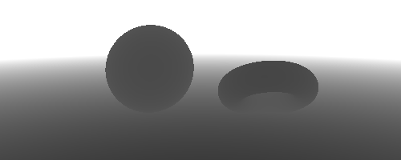
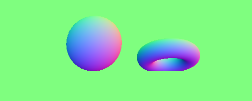
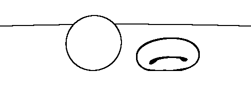
Object-space: lines as curves on the surface. Silhouettes alone feel empty on smooth shapes (a sphere is a circle). Add:
- Suggestive contours (DeCarlo, Finkelstein, Rusinkiewicz, Santella 2003): places that would be silhouettes from a nearby viewpoint (N·V local minimum). doi, project.
- Apparent ridges (Judd, Durand, Adelson 2007): ridges of view-dependent curvature. Fewer spurious lines, handles foreshortening. IEEE TVCG / SIGGRAPH 2007.
- Where do people draw lines? (Cole et al. 2008): compare real artists’ drawings to computed lines. Result: artists draw contours + a bit of suggestive; no single method matches them all; they agree with each other more than with algorithms. project.
- Survey: Bénard & Hertzmann, Line Drawings from 3D Models: A Tutorial, Foundations and Trends in Computer Graphics and Vision, 2019. The reference to read.
Practice: Blender Freestyle (render-time, view-dependent, line sets by type, thickness modifiers), and Grease Pencil Line Art (strokes you can edit and export as SVG).
C. Line quality
A perfect 1 px line looks like CAD. A drawn line has:
- weight varying: thicker on silhouette, near the viewer, on the shadow side, at the base of an object; thinner inside, far, on the lit side. This is the cheapest way to get depth and volume from lines.
- taper: pressure in, pressure out. Start heavy, end light, or the reverse.
- overshoot at corners, and gaps where two lines should meet.
- double stroke: the hand goes over the shape twice, slightly off.
- wobble: low-frequency noise on the position (bowing), plus a tiny high-frequency jitter.
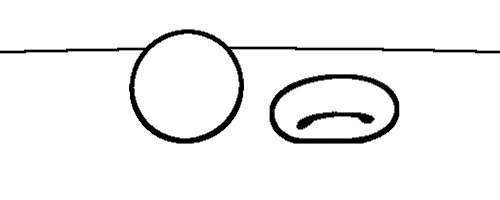
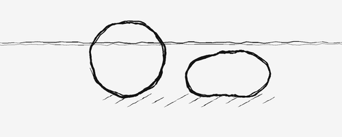
Code to start from: Wood et al., Sketchy Rendering for Information Visualization (IEEE TVCG 2012, the Handy library); rough.js (hand-drawn shapes in canvas/SVG); perfect-freehand (pressure-like variable-width stroke from points); matplotlib xkcd (path jitter by sinusoids, 3 lines of code).
Here the strokes were extracted from the object-id mask (polar max-radius contour, smoothed) and redrawn with ImageDraw at 3× then downsampled. Dumb but enough. Real tools do it on stroke paths, after chaining and simplification.
D. Depth with ink only
No colour, no real grey. Atmospheric perspective has to become density and character of the line. Seven rules from the engravers (notes gravure):
-
Contraste décroissant. Near: solid blacks next to pure
white. Far: everything closes toward a light mid grey, no true
black.
Renderer: remap tone with depth,t' = lerp(t, grey_far, f(z)); or limit the max ink density. -
Lignes plus fines. Far planes: thin, shallow cuts, a single
layer without cross-hatching.
Renderer:width = w0 / z^α; cross layer enabled only if z < z1. -
Direction simplifiée. Near: strokes follow the form,
varied. Far: nearly parallel and horizontal. Sky = regular
horizontal lines (often ruled by machine, 19th c.).
Renderer: blend direction field toward horizontal,angle = lerp(flow, 0, smoothstep(z)); less angular randomness far. -
Contours qui disparaissent. Near objects are outlined. Far
ones have no outline, only a change of density or angle.
Renderer: contour threshold rises with depth, or contour opacity → 0 past z2. -
Moins de détail (indication, Winkenbach & Salesin
1994): full texture near, suggested, then absent.
Renderer: hatch LOD by depth; stroke culling by priority. doi. -
Repoussoir. Dark foreground (tree, rock, backlit bank)
pushes the rest back by contrast.
Renderer: not a per-pixel rule; composition. Can be faked by a darkening term on the nearest layer. -
Grain des points. Far: very fine dots or broken strokes
instead of continuous lines: haze.
Renderer: stroke dash/dot probability up with depth.
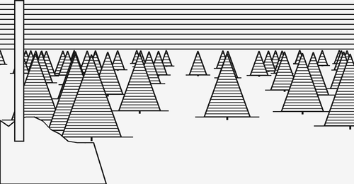
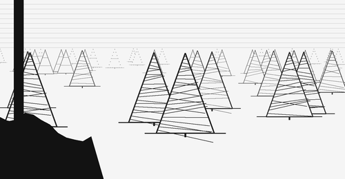
Same triangles, same positions. Right: width ~ 1/z, grey up with z, hatch angle random only near, no hatch beyond z 7, contour replaced by dots beyond z 5.5, sky lines pale, dark bank in front. Crude but the depth is already there. The same problem, done properly with levels of detail and a tone check: E. Line simplification.
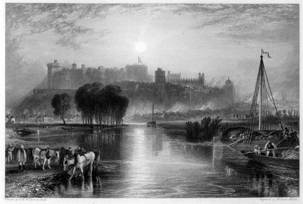

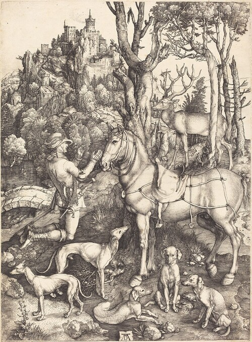

To look at, with a loupe:
- Dürer landscapes (Saint Eustace, Le Monstre marin).
- Turner’s engravers: William Miller, Robert Wallis, Edward Goodall. Atmosphere in pure line.
- Thomas Bewick vignettes: white-line wood engraving, depth in 5 cm.
- Doré’s engravers (Héliodore Pisan); Leighton, Agnes Miller Parker, Ravilious.
- Soulas: burin landscapes of Beauce, textbook case. Also Decaris, Flocon (La Perspective curviligne).
- Stamp engravers, Czesław Słania, Pierre Gandon: a deep landscape in 3 cm, no half-tone.
- Digital cousin: Ostromoukhov, Digital Facial Engraving (SIGGRAPH 1999), modulating line width and direction.
E. Line simplification
Rule 5 above (indication) says « less detail far ». How to do it on strokes is its own problem.
Downscaling an image is not simplifying a drawing
An image is a signal: low-pass filter, then resample (mipmaps, box, Lanczos). It works because averaging grey values gives a grey value. Lines are binary marks. Average them and you get either grey mush or a pile of lines on a few pixels. Simplifying a drawing means deciding: select, merge, simplify.
The trap: under perspective, the number of lines per screen area grows with distance (roughly ∝ 1/scale², same tree density, smaller trees). A naive render gets darker toward the horizon. Atmospheric perspective wants the opposite. The tone check (blur, as in chapter 1) shows it at once. Vocabulary of perception: density must be controlled, not left as a by-product of scale.
The demo: a tree landscape
Same scene, same 1100 trees placed at random on a ground plane (uniform density in the world), light from the left. Each tree: trunk, tiered contour, hatching on the shadow side, hatched cast shadow. Ground: dashed rows.
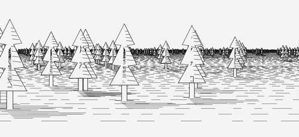
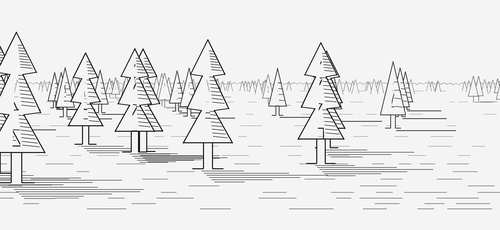
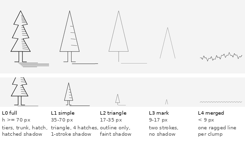
- L0 full: tiers, trunk, hatching following the tier slope, hatched cast shadow.
- L1: one triangle, 4 hatch lines, shadow in one stroke.
- L2: thin outline only, faint shadow tick (kept while longer than a few px).
- L3: a chevron, no shadow (it would be < 2 px).
- L4: individual trees disappear. The clump gets one ragged line along its top edge: typification, the pattern is kept, the elements are not.
- Plus line width and grey up with depth (rules 1 and 2), ground rows thinned then removed in the haze.
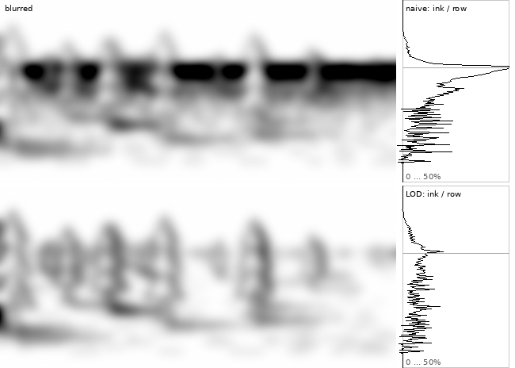
Script: scripts/lines/trees_lod.py (Python/PIL, numpy,
4× supersampling). Levels are chosen from the projected height
of the tree, so the cost is one threshold per object. Reuses the
triangles of section D, with
more rules and a real scene instead of a layout.
Cartographic generalization
Maps had this problem first: same data, scale 1:25 000 to 1:1 000 000. The operators, as listed in the literature: selection / elimination (drop objects), simplification (fewer vertices), smoothing, aggregation (merge neighbours: houses → built-up area), collapse (area → line → point), exaggeration (keep a small but important thing, enlarged), displacement (push apart what would touch), typification (keep the pattern, fewer elements). L2→L4 above is selection, collapse, aggregation, typification in that order.
How many objects to keep: Töpfer’s radical law, nf = na·√(Ma/Mf), with M the scale denominators. Halve the scale: keep 1/√2 of the objects, not 1/2 (the drawing space shrinks with 1/scale²; keeping all would be the naive render above). Töpfer & Pillewizer 1966.
Polyline simplification
Douglas–Peucker (Ramer 1972; Douglas & Peucker 1973): draw the chord between the ends, find the vertex farthest from it; if farther than ε, keep it and recurse on both halves, else drop everything between. Visvalingam–Whyatt (1993): repeatedly remove the vertex whose triangle with its two neighbours has the smallest « effective area ». DP keeps the sharp features, VW gives smoother results. Both are one parameter, no semantics: they do not know a tree line from a coast.
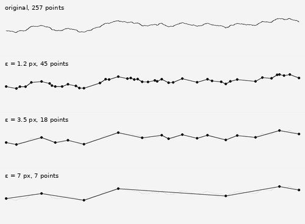
In NPR
- Density control. Grabli, Durand & Sillion (Density measure for line-drawing simplification, 2004): measure line density on screen, remove lines until it fits a target. doi. Wilson & Ma (2004): pen-and-ink with complexity controlled by what the viewer needs to read, not by geometry. doi.
- Trees. Deussen & Strothotte (2000): foliage drawn with abstract leaf primitives (disc, stroke), whose size and rendering depend on distance, outlines kept only above a depth-difference threshold. The same idea as the demo, with real trees. doi.
- Tonal Art Maps. Praun et al. (2001): hatch textures pre-built per mip level so that stroke density stays constant across levels, instead of strokes getting denser as they shrink. doi.
- Clustering. Barla, Thollot & Sillion (2005): group nearby lines and replace each group by one representative line. Aggregation, on strokes. doi (SIGGRAPH sketch).
- Attention. DeCarlo & Santella (2002): keep detail where the eye looked (eye tracking), abstract the rest. doi.
- Indication. Winkenbach & Salesin (1994): texture drawn on a few spots only (edges, shadows), the eye completes the rest.
- 3D analogue in real-time rendering: level of detail (LOD) meshes per distance, impostors (billboards standing in for far objects), mipmaps for textures. A forest in a game does exactly the L0→L4 chain, with triangles instead of strokes.
Retenir: scale shrinks the drawing, not the number of lines. Lines must be removed, merged, or lightened with depth, and checked by blurring.
F. Tools
- rough.js — hand-drawn shapes, JS.
- perfect-freehand — pressure-like strokes from points.
- vpype / vsketch — plotter-oriented vector pipeline and sketching in Python.
- hatched — image to hatching, SVG for plotters.
- DrawingBotV3 — image to pen-plotter paths, many styles.
- StippleGen — weighted Voronoi stippling.
- Blender Freestyle, Grease Pencil Line Art — 3D to lines.
- Pencil+ 4 — commercial toon/line shader plugin (Maya, 3ds Max...).
- matplotlib xkcd — the cheap sketchy look.
← 2. hatching | sommaire | 4. perception →